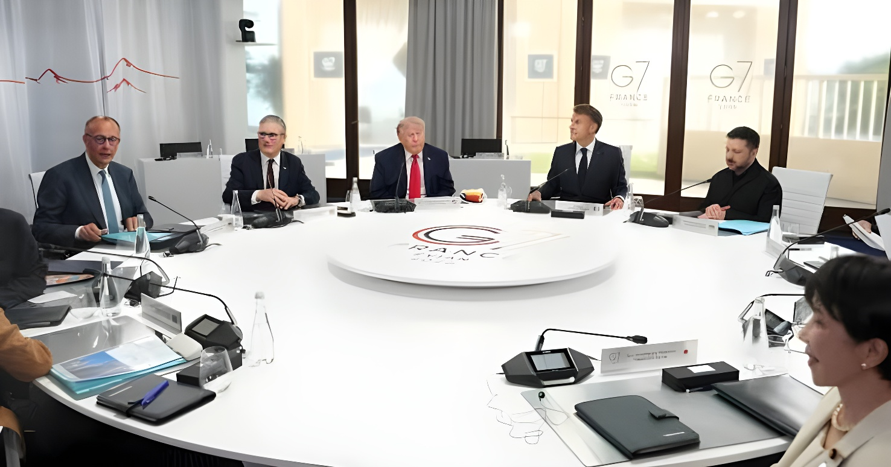

Du 15 au 17 juin 2026, la France a accueilli à Évian-les-Bains le 52e sommet du G7, vingt-trois ans après le G8 de 2003 organisé au même endroit. Sur fond de guerre en Ukraine, de crise iranienne et de tensions commerciales mondiales, le sommet s'est achevé sur une note inattendue : un revirement de Donald Trump sur le soutien à Kyiv, salué par Emmanuel Macron comme un « moment d'unité ».
Du 15 au 17 juin 2026, Emmanuel Macron et Brigitte Macron ont accueilli à l'Hôtel Royal d'Évian-les-Bains, en Haute-Savoie, le 52e sommet du G7. La ville devenait ainsi la première en France à recevoir deux fois ce rendez-vous, vingt-trois ans après le G8 de 2003 et sept ans après le sommet de Biarritz, déjà présidé par le chef de l'État français en 2019. Depuis le 1er janvier 2026, la France assure en effet la présidence tournante du groupe, qui réunit l'Allemagne, le Canada, les États-Unis, la France, l'Italie, le Japon et le Royaume-Uni, ainsi que l'Union européenne représentée par António Costa et Ursula von der Leyen.
Fidèle à une méthode revendiquée comme inédite, la présidence française a associé tout au long de l'année des pays partenaires — Brésil, Corée du Sud, Égypte, Inde et Kenya — aux travaux préparatoires, ainsi que le secteur privé de la tech et la société civile sur les sujets numériques. Le président ukrainien Volodymyr Zelensky a lui aussi été invité à Évian, où il a participé le 16 juin à une session de travail consacrée à la sécurité de l'Ukraine et de l'Europe.
La déclaration sur l'Ukraine prévoit un accroissement du soutien militaire à Kyiv, incluant des capacités de défense antiaérienne, des systèmes et intercepteurs supplémentaires, ainsi que la production sous licence d'armements américains — notamment des missiles longue portée — directement sur le sol ukrainien. Les dirigeants ont par ailleurs réaffirmé leur volonté de mobiliser les financements nécessaires aux besoins ukrainiens tout en maintenant la pression économique sur la Russie, dont Donald Trump a annoncé la réimposition de sanctions sur le pétrole qui avaient été précédemment levées.
Le sommet a aussi permis aux dirigeants de saluer l'accord trouvé le 14 juin 2026 entre les États-Unis et l'Iran, dont la signature était attendue à Genève dans les jours suivant le sommet. Ce texte ouvre la voie à une réouverture du détroit d'Ormuz, par lequel transite environ 20 % du pétrole mondial. Dans la foulée, la France et le Royaume-Uni ont proposé la mise en place d'une force multinationale franco-britannique chargée de sécuriser le trafic maritime dans la région, une initiative accueillie favorablement par leurs partenaires.
Sur le terrain économique, les discussions sur l'intelligence artificielle et le commerce mondial n'ont en revanche pas abouti à un cadre commun formel, illustrant les limites persistantes du consensus du G7 face aux tensions tarifaires et à la compétition technologique internationale.
« Nous devons montrer notre volonté d'agir, de coopérer et de défendre les principes qui sous-tendent la stabilité mondiale. »
— António Costa, président du Conseil européen, en amont du sommet du G7 à Évian, juin 2026Au total, neuf déclarations ont été adoptées à l'issue du sommet. Sur le numérique, les dirigeants se sont engagés en faveur d'un espace plus sûr pour les mineurs, notamment en adaptant le langage des agents conversationnels d'intelligence artificielle s'adressant aux enfants. Sur la santé, le G7 a affiché une approche concertée pour les cancers de mauvais pronostic et les cancers pédiatriques, et a annoncé plus d'un milliard de dollars d'engagements financiers face à la résurgence de l'épidémie d'Ebola, en cohérence avec les actions des Nations unies. Une déclaration distincte porte sur la sécurisation des chaînes d'approvisionnement en minerais critiques, dont les membres du G7 jugent désormais indispensable de réduire collectivement la dépendance.
La France prend la présidence tournante du G7 pour un an, succédant au Canada.
Réunion des ministres des Finances et gouverneurs de banques centrales du G7 à Paris, présidée par Roland Lescure et François Villeroy de Galhau.
Un accord est trouvé entre les États-Unis et l'Iran, ouvrant la voie à une réouverture du détroit d'Ormuz.
Ouverture du sommet du G7 à Évian-les-Bains ; le président suisse Guy Parmelin accueille les délégations à l'aéroport de Genève.
Volodymyr Zelensky participe à une session de travail sur la sécurité de l'Ukraine et de l'Europe.
Clôture du sommet : adoption de neuf déclarations, dont celle sur l'Ukraine signée par Donald Trump.
Le sommet d'Évian restera sans doute comme celui d'un revirement spectaculaire plus que d'une refondation du multilatéralisme. Le réalignement américain sur l'Ukraine et la perspective d'un règlement avec l'Iran ont permis à la présidence française de présenter le rendez-vous comme une réussite, après des mois de tensions transatlantiques sur le commerce et la sécurité. Mais l'absence de cadre commun sur l'intelligence artificielle et les déséquilibres commerciaux mondiaux rappelle que les divergences de fond entre les Sept restent loin d'être résolues.
Reste à savoir si ce « moment d'unité » se traduira dans la durée. La mise en œuvre des engagements pris à Évian — du soutien militaire à l'Ukraine à la force maritime franco-britannique pour le détroit d'Ormuz — se jouera désormais loin des caméras, dans les mois qui suivront la présidence française du G7.